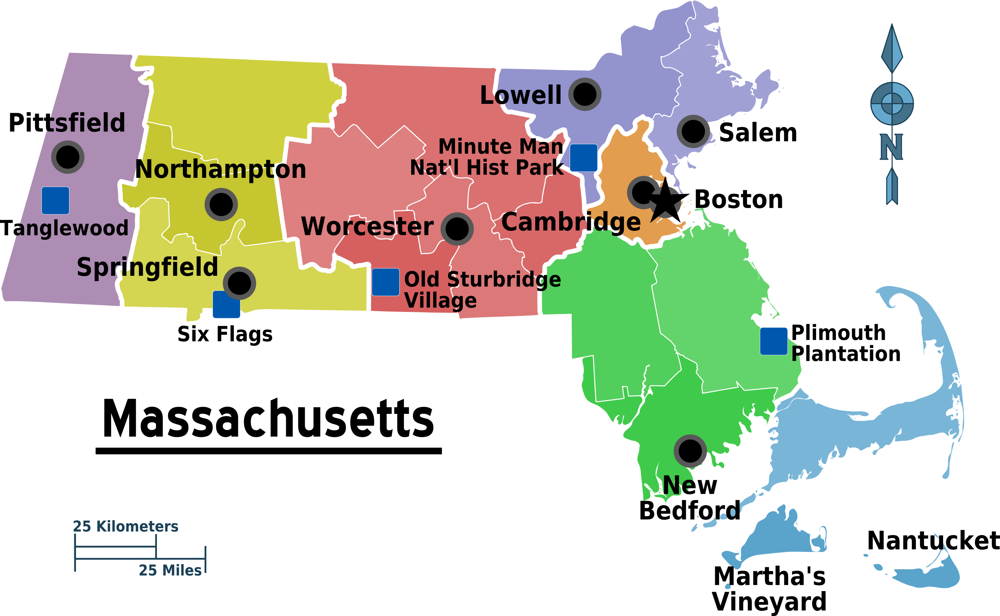

The New York Times
CNN's Cuomo conundrum: A star anchor with a
brother in
trouble
Bloomberg Opinion
Thinking about getting a booster? Read this
first.
COVID-19 - LIVE
COVID-19: News and updates for
Massachusetts

Overwatch 2 - LIVE
Overwatch 2: News and Updates for Creators